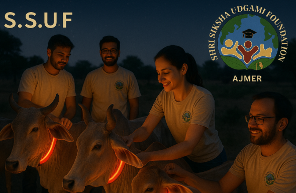

पशु कल्याण में योगदान:
श्री शिक्षा उद्गामी फाउंडेशन का प्रयास
इवेंट की तारीख: 31 अगस्त 2024
स्थान: अजमेर

प्रस्तावना (Introduction):-
श्री शिक्षा उद्गामी फाउंडेशन द्वारा गायों के संरक्षण के उद्देश्य से एक विशेष कार्यक्रम आयोजित किया गया,
जिसमें गायों के गले में रेडियम की पट्टियाँ (फीते) बांधने का कार्य किया गया। इस कार्यक्रम का मुख्य उद्देश्य गायों की सुरक्षा सुनिश्चित करना
और उन्हें सड़क दुर्घटनाओं से बचाना था, खासकर रात के समय, जब अंधेरे में वाहन चालक उन्हें आसानी से नहीं देख पाते।
कार्यक्रम का विवरण:-
कार्यक्रम का उद्देश्य:-
1.
गायों की सुरक्षा:- रात के समय जब सड़कें अंधेरी होती हैं, तो वाहन चालकों को गायों को देख पाना मुश्किल हो जाता है,
जिससे दुर्घटनाओं की संभावना बढ़ जाती है। रेडियम की पट्टियाँ लगने से गायें रात में चमकती रहती हैं, जिससे वाहन चालक उन्हें आसानी से देख सकते हैं
और दुर्घटनाओं से बचा जा सकता है।
2.
गायों का संरक्षण:- इस पहल का उद्देश्य केवल गायों की जान बचाना ही नहीं, बल्कि उनके संपूर्ण संरक्षण की दिशा में कदम उठाना था।
यह फाउंडेशन का एक प्रयास था कि सड़क पर भटकने वाली गायों को सुरक्षित रखा जा सके और उनका सही ढंग से संरक्षण किया जा सके।
कार्यक्रम की प्रमुख गतिविधियाँ:-
1.
रेडियम की पट्टियाँ बांधना:- इस कार्यक्रम के तहत गायों के गले में रेडियम की चमकने वाली पट्टियाँ बांधी गईं। ये पट्टियाँ विशेष प्रकार की होती हैं,
जो रात के अंधेरे में दूर से चमकती हैं, जिससे वाहन चालकों को यह पता चल जाता है कि सड़क पर गाय मौजूद है। इससे दुर्घटनाओं की संभावना काफी हद तक कम हो जाती है।
2.
गायों की पहचान और स्वास्थ्य जांच:- इस अवसर पर, फाउंडेशन के सदस्यों ने न केवल गायों के गले में पट्टियाँ बांधीं,
बल्कि उनकी पहचान के लिए टैगिंग की भी प्रक्रिया अपनाई गई। साथ ही, कुछ गायों का स्वास्थ्य परीक्षण भी किया गया ताकि यह सुनिश्चित किया जा सके कि वे स्वस्थ हैं
और उन्हें किसी भी तरह की देखभाल की आवश्यकता नहीं है।
3.
स्थानीय लोगों की भागीदारी:- इस कार्यक्रम में स्थानीय लोगों की भी भागीदारी सुनिश्चित की गई। फाउंडेशन ने स्थानीय निवासियों को जागरूक किया कि
वे गायों की सुरक्षा के प्रति सचेत रहें और सड़कों पर आवारा घूमने वाली गायों को सुरक्षित स्थानों पर ले जाने में सहयोग करें। साथ ही उन्हें यह भी बताया गया कि वे इन
गायों की देखभाल कैसे कर सकते हैं।
कार्यक्रम के लाभ:-
1.
सड़क दुर्घटनाओं में कमी:- रेडियम की पट्टियाँ रात में गायों को आसानी से दिखाई देने योग्य बनाती हैं, जिससे दुर्घटनाओं की संभावना कम होती है।
इससे न केवल गायों की जान बचाई जा सकेगी, बल्कि वाहन चालकों की सुरक्षा भी सुनिश्चित होगी।
2.
जागरूकता फैलाना:- इस कार्यक्रम के माध्यम से फाउंडेशन ने स्थानीय लोगों में जागरूकता फैलाई कि गायों की सुरक्षा और संरक्षण के लिए वे
भी अपना योगदान दें। यह एक बड़ा कदम था जो पशु कल्याण के प्रति लोगों के दृष्टिकोण को बदलने में सहायक सिद्ध हुआ।
3.
सकारात्मक सामाजिक प्रभाव:- इस तरह के कार्यक्रम से समाज में एक सकारात्मक संदेश गया कि गायों की सुरक्षा और संरक्षण
भी हमारी जिम्मेदारी है। इससे पशु अधिकारों के प्रति जागरूकता बढ़ी और लोगों में पशु कल्याण के प्रति संवेदनशीलता आई।
फाउंडेशन का उद्देश्य और भविष्य की योजनाएँ:-
श्री शिक्षा उद्गामी फाउंडेशन का यह कार्यक्रम एक महत्वपूर्ण पहल है, जो पशु संरक्षण के प्रति समर्पण को दर्शाता है। फाउंडेशन भविष्य में
भी ऐसे कई और कार्यक्रम आयोजित करने की योजना बना रहा है, जिनके माध्यम से न केवल गायों की सुरक्षा सुनिश्चित की जाएगी, बल्कि अन्य पशुओं के संरक्षण
और उनके अधिकारों की रक्षा के लिए भी कदम उठाए जाएँगे।
निष्कर्ष:-
यह कार्यक्रम सफल रहा और समाज में एक सकारात्मक संदेश पहुंचाने में सक्षम हुआ। गायों की सुरक्षा और संरक्षण के प्रति यह छोटा सा कदम बड़ा प्रभाव डाल सकता है,
और श्री शिक्षा उद्गामी फाउंडेशन इस दिशा में लगातार प्रयासरत रहेगा।
← Back
Next post →